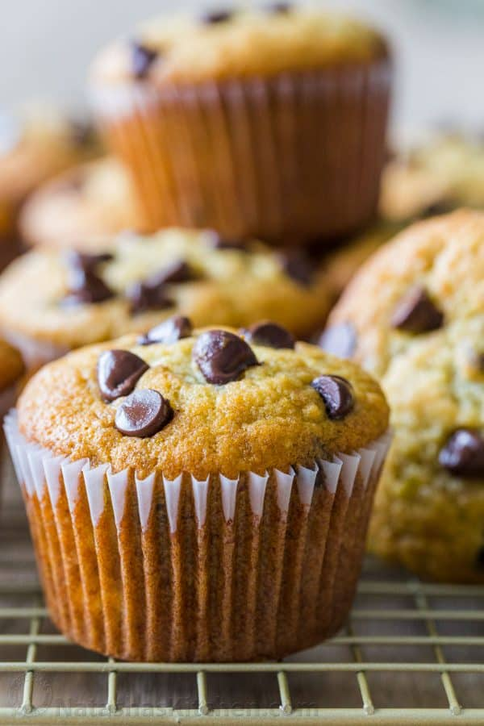

Banana Muffin Recipe

Soft and moist Banana Muffins with melty
chocolate chips are the ultimate treat.
Banana chocolate chip muffins are a great
way to use overripe bananas and a fresh spin
on classic banana bread.
Ingredients
- Butter
- Sugar
- Bananas
- Vanilla
- Baking Soda
- Salt
- Chocolate Chips
Steps
- Preheat the oven and place liners
in a 12-count muffin tin.
- Cream together butter and sugar
then mix in lightly beaten eggs.
- Add mashed bananas and vanilla.
- Whisk together flour, baking soda and salt then mix into batter.
Fold in 3/4 cup chocolate chips.
- Scoop batter into lined muffin tin, sprinkle with
chocolate chips and bake.